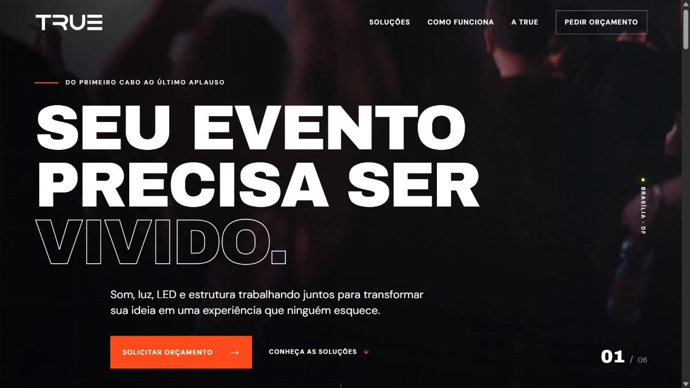
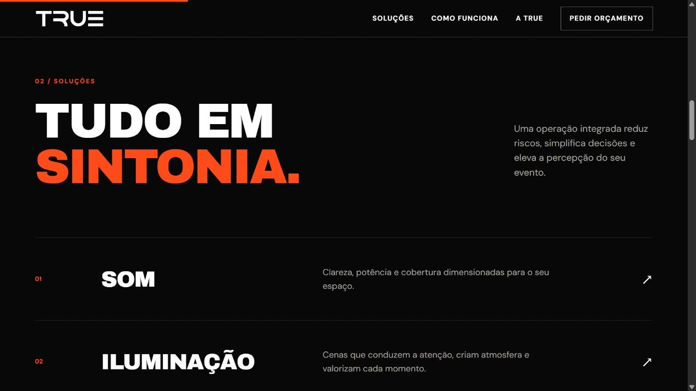
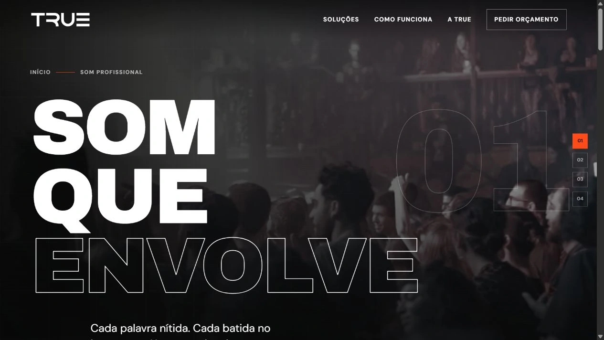
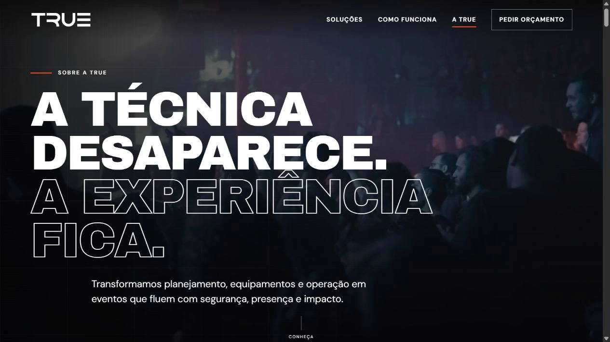
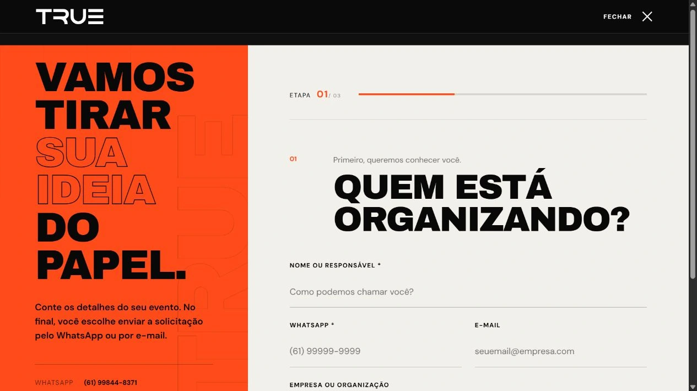

O evento começa
antes do primeiro aplauso.
Criação do website institucional da TRUE Eventos, empresa de soluções técnicas para eventos em Brasília. Uma presença digital que apresenta som, iluminação, painéis de LED e estruturas, traduz a atmosfera da marca e conduz o visitante até a solicitação de orçamento.

Uma abertura que conecta o serviço técnico à experiência de quem vive o evento.
Do impacto visual
à próxima ação.
A home apresenta a proposta da TRUE antes de entrar nos detalhes técnicos. A sequência organiza o desafio, as soluções, a operação e o processo de atendimento, com chamadas para orçamento ao longo do percurso.
Quatro páginas de serviço aprofundam som, iluminação, painéis de LED e estruturas. A página institucional reúne a apresentação da empresa e uma galeria de fotos e vídeos, enquanto o pedido de orçamento tem um espaço próprio na navegação.

Nome, descrição e acesso à página de cada solução.

A linguagem visual da home continua nas páginas internas.
Uma presença
que ocupa a tela.
Títulos em Archivo Black, alternando preenchimento e contorno, dão ritmo à apresentação. DM Sans mantém a leitura dos textos e controles.
A atmosfera
como contexto.
Fotografias e vídeo de eventos aproximam o visitante do universo da marca. Fundos escuros sustentam o contraste com os títulos.
Laranja para
guiar o olhar.
O acento aparece nas chamadas, numerações e estados de destaque, conectando a leitura ao próximo passo da navegação.
Conhecer a empresa.
Começar uma conversa.
A página “A TRUE” amplia a apresentação da operação com conteúdo institucional e registros em foto e vídeo. O mesmo tratamento tipográfico mantém unidade entre a home e as páginas internas.
Na solicitação de orçamento, a interface muda para uma composição de fundo claro e painel laranja. O formulário indica três etapas e começa pela identificação do responsável, separando esse momento da navegação de apresentação.

Apresentação institucional conectada ao universo visual do site.

Identificação de etapa, hierarquia dos campos e continuidade do fluxo.
A mesma linguagem.
Outro ritmo de leitura.
No celular, a navegação se recolhe em um menu, os títulos ocupam mais linhas e o conteúdo passa a uma coluna. A home mantém a apresentação visual da marca e uma chamada de orçamento junto à base da tela.
A listagem de soluções reúne título, descrição e acesso em blocos verticais, preservando a hierarquia entre a apresentação da empresa e os detalhes de cada serviço.